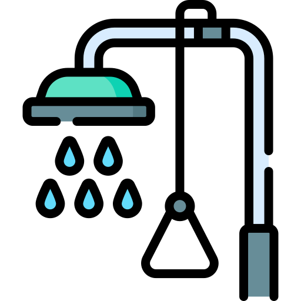
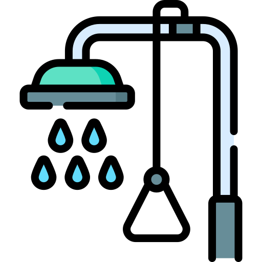

At METS Laboratory, we understand that precision and reliability in Oil and Gas Testing form the cornerstone of industry confidence. Our analytical facility unites modern technological equipment with specialized experience accumulated over several decades. Approximately 92% of our clients gain operational control and environmental stewardship through our capability to transform sophisticated testing challenges into decision-enabling insights.
Our purpose-built facility, led by highly qualified scientists and technicians delivers comprehensive analysis on Oil and Gas Testing with efficiency and precision. Our operations extend from examining crude oil to measuring refined products and environmental screening in addition to handling specialised testing requirements while reliably delivering both quality and accuracy benefits to the energy sector.
As the energy landscape evolves, our Petroleum Testing Services UK continue to expand and adapt. We serve as a trusted partner across the energy spectrum, providing crucial data that supports quality control, regulatory compliance and process optimization. Whether you’re involved in exploration, production, refining or distribution, our testing services provide the analytical foundation for your operations.


Our laboratory maintains ISO/IEC 17025:2017 accreditation, demonstrating our technical competence in Oil and Gas Testing services. We implement ASTM International testing methods, International Organization for Standardization (ISO) protocols and Energy Institute (EI) standard procedures. Our global standards-based testing for Petroleum Testing Services UK procedures guarantee international acceptance along with exact results and uniform outcomes.
In compliance with UK regulations, our Petroleum Testing Services UK are validated by the United Kingdom Accreditation Service (UKAS) and change to the Energy Act 2016 requirements. We work closely with the Health and Safety Executive (HSE) and follow the Environmental Protection Act 1990 guidelines. Our commitment to the UK Offshore Chemical Notification Scheme coverage ensures comprehensive Oil and Gas Testing requirements and supports our client regulatory obligations.
When testing particular methods we use ASTM D1298 for density calculations while ASTM D445 tracks kinematic viscosity and ASTM D4294 determines sulfur content measurements. The analysis reliability of our laboratory derives from 2nd EN ISO 4259 and BS EN ISO 3170 handling procedures that describe petroleum product analysis techniques.
Environmental protection drives our Petroleum Testing Services UK approach. We maintain compliance with Environment Agency protocols and SEPA (Scottish Environment Protection Agency) requirements. Our Oil and Gas Testing frameworks follow both BEIS Department for Business Energy and Industrial Strategy guidelines and OGA Oil and Gas Authority specifications. Our company maintains compliance with both Marine Organisation International (IMO) regulations along with full environmental and safety standards for marine fuels.
This robust framework of standards and accreditations ensures that every test, analysis, and report meets industry requirements while supporting our clients’ operational and environmental goals. Our commitment positions us as a trusted partner for Petroleum Testing Services UK in the Oil and Gas Testing sector, delivering reliable, accurate, and compliant testing services for the industry’s evolving needs.
- Product Quality and Performance - Maintaining the purity of crude oil, fuels and petrochemicals.
- Regulatory Compliance - Meeting global standards such as ASTM, ISO and regional specifications.
- Environmental Protection - Correcting emission gases wastewater and soil contamination.
- Operational Safety - Detecting hazardous components, corrosion risks and material degradation.
- Process Optimisation - Enhancing refining, storage and transportation efficiency.

- Oil Exploration & Production Companies - Ensuring crude oil quality and drilling fluid efficiency.
- Refineries & Petrochemical Plants - Monitoring process efficiency and by-product composition.
- Natural Gas & LNG Suppliers - Assessing purity, energy value and safety parameters.
- Pipeline & Storage Operators - Testing corrosion resistance and contamination levels.
- Energy & Power Generation - Evaluating combustion, efficiency and emissions.
- Regulatory & Environmental Agencies - Assisting in compliance and sustainability monitoring.
- Crude Oil Samples: Analysis of sweet vs. sour crude, light vs. heavy crude for refining potential.
- Refined Petroleum Products: Quality verification for gasoline, diesel, jet fuel and kerosene.
- Lubricants and Oils: Testing evaluates the viscosity and performance characteristics of engine oils, hydraulic oils and gear oils.
- Asphalt or Bitumen: The capabilities to assess properties suitable for construction and industrial applications.
- Raw Natural Gas: Assessing methane content and impurities like H₂S and CO₂.
- Liquefied Natural Gas (LNG): Determining purity, calorific value, and composition.
- Compressed Natural Gas (CNG): Evaluating compression efficiency and quality specifications.
- Liquefied Petroleum Gas (LPG): Measuring propane/butane ratio, moisture and contaminants.
- Basic Petrochemicals: Ethylene, propylene, butadiene, benzene, toluene and xylene (BTX).
- Intermediate Chemicals: Methanol, acetic acid, and ethylene glycol for industrial applications.
- Polymers & Resins: Testing polyethylene, polypropylene and PVC properties.
Our company delivers dependable testing services focused on basis Petroleum Testing Services UK quality safety and environmental responsibility which help power the energy sector. The analytical expertise at our company safeguards that your products maintain industry standards while meeting specified performance requirements during all stages of exploration, refining and transportation.
Find our precise sustainable compliant testing solutions by contacting our team right now.


 
